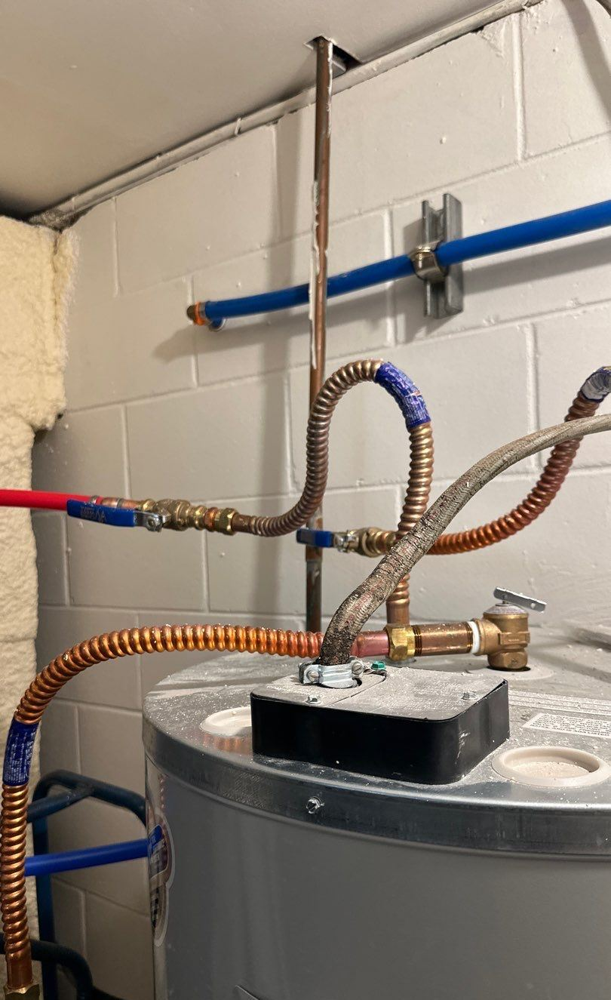
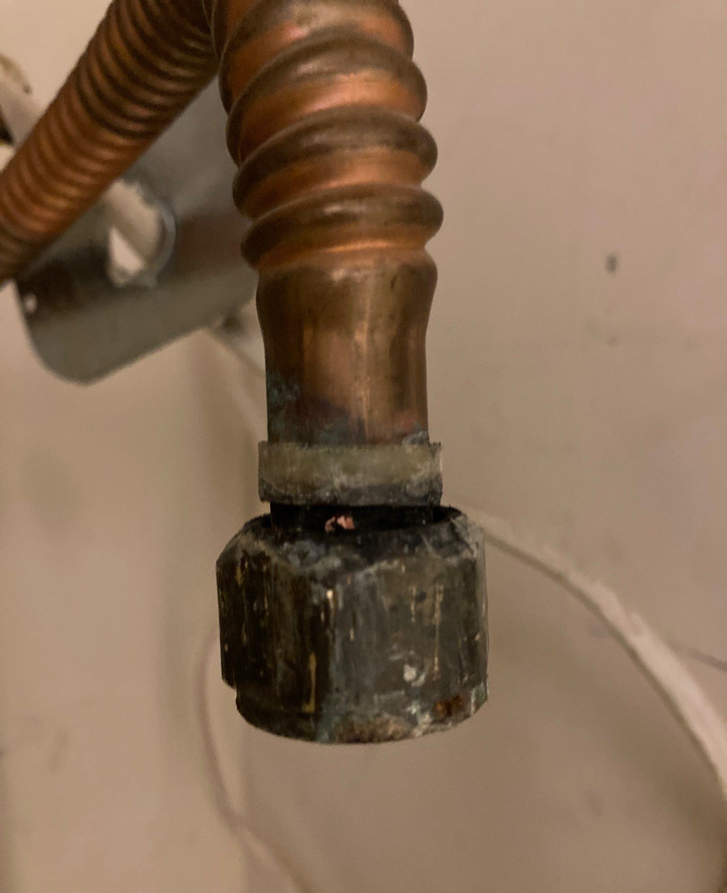
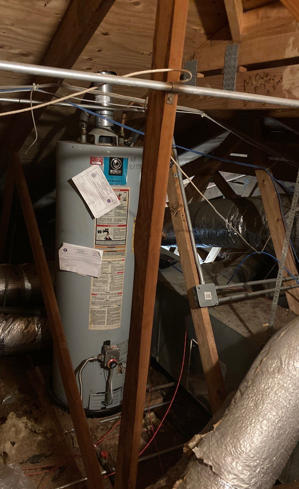

What Should I Do After a Water Heater Leak?
Review immediate shutoff, safety, documentation, and next-step guidance.
Read the water heater leak guideWater heater leak repairs and restoration in Jonesboro and surrounding Northeast Arkansas communities are provided by Crain Bros Inc for homes and businesses. Supporting work can include stopping the leaking supply, connection, tank, valve, or drain condition, removing water, drying wet walls and floors, and repairing damaged drywall, insulation, trim, cabinets, subflooring, and finishes. Crain Bros Inc is a family-owned and operated Arkansas contractor serving property owners since 1984.

The first step is identifying and controlling the tank, supply, connection, valve, drain, or discharge condition. Plumbing repairs and leak detection are coordinated with the property restoration work so the source and the resulting damage are addressed together.
Water can move beneath flooring, through wall cavities, into insulation, behind cabinets, and into adjoining rooms. Inspection and moisture readings help define the affected area before materials are covered or repaired.

Standing water is removed, affected materials are evaluated, and drying is monitored with moisture readings. Drying is complete when affected assemblies reach an appropriate documented condition, not simply when surfaces appear dry.
After affected materials are dry and verified, Crain Bros Inc can repair drywall, insulation, flooring, subflooring, cabinets, baseboards, trim, and finishes. The work connects the specific leak condition with the broader water damage restoration and property damage restoration process.

Crain Bros Inc documents visible conditions, moisture findings, approved work, progress, and completed repairs. That information is provided to the property owner for use on the property owner's own behalf. Crain Bros Inc does not file, adjust, or negotiate insurance claims.
Service is available in Jonesboro, Paragould, Blytheville, Trumann, Newport, Brookland, Bono, Bay, Lake City, Monette, Caraway, Harrisburg, Gosnell, and Walnut Ridge.
Review immediate shutoff, safety, documentation, and next-step guidance.
Read the water heater leak guideReview water-connected equipment, warning signs, records, and planned replacement.
Read the maintenance guideUse location, timing, nearby rooms, weather, plumbing, and HVAC operation to guide investigation.
Read the ceiling-water-stain guideThese outside resources focus directly on water heaters, equipment choices, energy use, and water-heater recalls. Property owners should also follow the instructions for the equipment installed at the property.
Compare current water-heater categories, including heat-pump, high-efficiency gas-storage, solar, tankless gas, and commercial water heaters.
Review ENERGY STAR Water Heater InformationReview water-heating equipment types, energy considerations, and property-owner information from the U.S. Department of Energy.
Review Department of Energy Water Heating InformationSearch current U.S. Consumer Product Safety Commission recall notices that specifically mention water heaters.
Search Water Heater RecallsCrain Bros Inc provides the related services needed to follow the source, water pathway, affected materials, safety concerns, and documented conditions through repair and restoration.
Crain Bros Inc provides emergency response services for leaking water heaters and failed water connections, including source control coordination, water removal, safety measures, and steps to limit additional property damage.
View Emergency Response ServicesCrain Bros Inc provides building inspection and diagnostic services that connect the visible leak area with adjoining rooms, concealed assemblies, electrical components, HVAC equipment, and other affected building systems.
View Building Inspection & Diagnostic ServicesCrain Bros Inc provides leak detection services to help distinguish a failed tank, valve, fitting, supply line, drain, or another nearby water source and trace the pathway through the building.
View Leak Detection ServicesCrain Bros Inc provides plumbing services to correct the failed water heater, valve, supply connection, piping, drain, or related source before restoration closes the affected area.
View Plumbing ServicesCrain Bros Inc provides water removal, moisture documentation, controlled drying, cleaning, affected-material decisions, and repairs after source control.
View Water Damage Restoration ServicesCrain Bros Inc provides property and building restoration services that coordinate structural materials, finishes, and connected trade work as one property repair.
View Property & Building Restoration ServicesCrain Bros Inc provides flooring installation and repair services when released water affects finished flooring, underlayment, transitions, subflooring, and adjoining floor assemblies.
View Flooring Installation and Repair ServicesCrain Bros Inc provides drywall and ceiling repair services for removal, drying access, patching, finishing, and reconstruction after the moisture condition is resolved.
View Drywall and Ceiling Repair ServicesCrain Bros Inc provides insulation services when wet, displaced, contaminated, or damaged insulation requires evaluation, removal, drying coordination, and replacement.
View Insulation ServicesCrain Bros Inc provides cabinetry repair and replacement services when cabinet boxes, toe kicks, panels, built-ins, and adjoining millwork absorb water or block access to concealed damage.
View Cabinetry ServicesCrain Bros Inc provides trim carpentry services when baseboards, door casing, crown molding, and other finish carpentry require removal and replacement after drying and wall repairs.
View Trim Carpentry ServicesCrain Bros Inc provides painting services when repaired walls, ceilings, trim, and other finishes require preparation, stain control, and repainting only after the underlying assembly is ready.
View Painting ServicesCrain Bros Inc provides electrical services when water near wiring, receptacles, controls, fixtures, or equipment requires appropriate electrical evaluation before the area is returned to service.
View Electrical ServicesCrain Bros Inc provides HVAC services to evaluate nearby mechanical equipment, ductwork, controls, insulation, and condensate components when water reaches the mechanical area.
View HVAC ServicesIf it is safe, stop the water source, avoid electrical hazards, document visible conditions, and request help with source control, water removal, and inspection.
Yes. Water can move beneath flooring, through wall cavities, into insulation, behind cabinets, and into adjoining rooms beyond the visible wet area.
The decision depends on the material, exposure, physical condition, moisture readings, contamination concerns, access, and whether the material can be cleaned and dried effectively.
Crain Bros Inc can coordinate plumbing source correction with water removal, drying, and repair of affected building materials and finishes.
Affected assemblies are inspected, materials that cannot be restored are removed, remaining materials are dried and verified, and damaged components are repaired or replaced.
Yes. Crain Bros Inc documents visible conditions, moisture findings, approved work, progress, and completed repairs for the property owner.